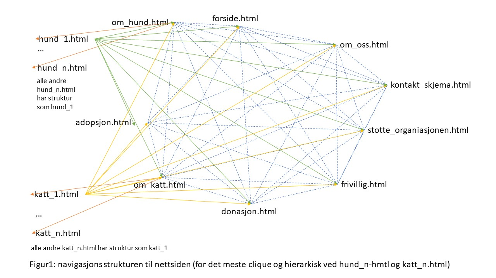

Klient
Klient vår er organisasjon Nytt hjem for dyr og kontaktperson forbindelse med prosjektet heter Einar Lillevik. Han er leder av Nytt hjem for dyr i 5 år. Han har jobbet med dyr i flere år og tok med seg denne erfaringen når han startet sin egen organisasjon for fosterhjem og adopsjon av dyr. Einar ønsker at det skal kunne være lettere for en person å finne ut av informasjon i forbindelse med adopsjon og fostering. Dermed skal denne nettsiden hjelpe Einar å videreføre dette budskapet.
Formål og mål
Hensikten med nettsiden er å gjøre lett tilgjengelig for allmenn person å kunne finne fram til all nødvendig informasjon for adopsjon eller fostering av dyr. Dette inngår også i målet til organisasjonen å ønske utvide sitt nettverk av bruker som flere dyr kan får et hjem. Dette blir for eksempel vist i innholdet på nettsiden ved situasjon om en bruker ønsker å foster kan de gå innpå “fostering” og lese eventuelt krav/informasjon for å melde seg som fosterhjem.
Målgruppe
Brukere vil hovedsakelig være folk som er på utkikk etter dyr de kan fostre midlertidig eller adoptere permanent, og som ønsker å bruke siden for å finne informasjon om organisasjonen og om ledige dyr. I tillegg kan informasjon om organisasjonen på nettsiden være aktuell for folk som trenger å adoptere bort dyrene sine. Til slutt vil også folk som vil bidra med frivillig arbeid eller pengedonasjoner kunne ha bruk for informasjon på nettsiden om hvordan de kan bidra.
Navigasjonsstruktur
Strukturen til nettsiden vil være for det meste clique, der unntaket er sidene som har informasjon om en bestemt hund eller katt. De sidene er strukturert i to hierarkier, den ene med katte-sider under katt.html og den andre hunde-sider under hund.html. I tillegg kan en side om en bestemt hund eller katt nå de andre sidene som er strukturert etter clique, men den kan ikke nå en annen hund- eller katte- side. En hunde-side kan bare nås gjennom om_hund.html og en katte-side kan bare nås gjennom om_katt.html. Det bør også nevnes at noen av linkene til de faste sidene dukker ikke opp før musen “hover” over menybaren.
Grunnen til at vi har for det meste valgt clique er at brukeren skal lettere navigere de faste sidene. F.eks. en bruker kan gå direkte fra forside.html til en underside som om_katt.html for å se på om det er noen katter de liker. Clique kan derimot ikke brukes med alle de bestemte og varierende hunde- og katte-sidene fordi det er for mange av dem. Det er derfor bedre å ha et hierarki struktur der slik at brukeren ikke må se linker til hunder når de er inne på om_katt.html. For eksempel når brukeren trykker seg inn på katten “Cleo” så er det ingen linker til hunder eller andre katter som kunne skapt forvirring.
Sideoppsett og utseende
- Farge schema:
- Backgrunn: #FFFFFF
- Header:
- Footer:
- Tekst: #000000
- Error/Avvis:
- Godkjent/Bekreft:
- Skriftstørrelse og type:
- Overskrifter:
- Mellomoverskrifter:
- Tekstinnhold:
- Footer:
- Tekst:
- Utforming :
- Navbar på topp med logo
- Footer i bunnen
- Teksten skal være ...
- Når man velger et dyr skal dette åpnes i et eget vindu
- Skal være neddropp meny for to av elementene i headeren
Innehold
Forside
Forsiden/hjemmesiden skal være den første siden man kommer til når man besøker nettsiden til Nytt hjem for dyr. Forsiden vil ikke ha mye innhold, men skal inneholde bilder og noe tekst som gjør at brukeren av nettsiden får et innblikk i organisasjonen og deretter kan trykke seg videre til den siden som er mest aktuell for vedkommende. Forsiden skal være enkel og intuitiv, og gjøre brukeren nysgjerrig på resten av innholdet på nettsiden.
Øverst skal forsiden inneholde en navigasjonsbar som kan brukes til å navigere videre til de andre sidene. Logoen til organisasjonen skal vises til venstre i navbaren. Under denne skal det være et slideshow av bilder (browserwidth?) der brukeren kan klikke på piler for å bla til neste bilde. Under slideshowet skal det være en kort tekst som forklarer at brukeren kan bruke nettsiden til å finne info om katter og hunder som trenger adopsjon/fosterhjem. Samlet sett håper vi dette vil fange oppmerksomheten til brukeren og gjøre at hun/han får lyst til å undersøke resten av nettsiden. Dette skal være enkelt, siden vi har en navbar som gjør det lett å klikke seg videre.
Fosterhjem
Siden om fosterhjem skal holdes enkel. I motsetning til for adopsjon vil organisasjonen ikke legge ut bilder av dyr som trenger fosterhjem, da det vanligvis ikke vil være mulig for fosterhjemmet å velge seg ut dyr. Vi vil derfor holde det enkelt, og heller informere om hva det innebærer å være fosterhjem og hvilke krav som stilles i teksten. Til slutt skal brukeren kunne klikke seg videre til et kontaktskjema, dersom man etter å ha lest teksten tenker at å være fosterhjem kan være aktuelt. Navbaren skal være plassert på toppen av siden slik at brukeren lett kan bevege seg til andre deler av nettsiden.
Støtt oss/Bidra
Siden «Støtt oss» skal gi informasjon til brukeren om muligheten for å bidra til organisasjonen enten ved æ bli frivillig eller ved å donere penger. Også denne siden vil holdes enkel, og kun inneholde tekst med informasjon om hva det innebærer å være frivillig og om hvordan man kan bidra med penger. Etter en kort introtekst skal underoverskrifter og tekst om de to ulike måtene å bidra på gjøre det enkelt og greit for brukeren å finne fram til aktuell informasjon raskt. Det skal gå tydelig fram hva man skal gjøre dersom man ønsker å bli frivillig og hvordan man kan donere penger. Navbaren skal være plassert på toppen av siden slik at brukeren lett kan bevege seg til andre deler av nettsiden.
Om oss
Siden «Om oss» skal inneholde et bilde øverst (696x262px, centered?) som fanger brukerens oppmerksomhet. Deretter skal brukeren få en kort informasjonstekst om organisasjonens historie og dens mål og arbeid. Deretter skal brukeren kunne lese en kort tekst om at det er mulig å støtte organisasjonen som frivillig eller via pengedonasjon, siden det kan hende at brukere som besøker denne siden har lyst til å bidra. Nederst på siden skal brukeren finne all aktuell kontaktinformasjon til organisasjonen, slik at det er enkelt å vite hvordan man kan komme i kontakt med Nytt hjem for dyr. Navbaren skal være plassert på toppen av siden slik at brukeren lett kan bevege seg til andre deler av nettsiden.
Minstekrav
For nettsiden planlegger vi å legge til følge Javascript applikasjoner
- Hoverable dropdown menu
- Image slider
- From validation
- Sorting
Formålet å ha denne effekten er å gjøre enklere for brukeren å navigere nettsiden med å gjøre alt lett tilgjengelig. Hoverable dropdown menu vil bare være på kategorier for den er nødvendig som adopsjon igjen har under kategorier katt og hund.
Formålet med denne effekten er å vise flere bilder på organisert måte som ikke vil ta vekket oppmerksomhet fra innholdet på nettsiden. Også gjøre nettsiden mer dynamiske og interaktive for brukeren. Image slider effekt vil hovedsakelig bare være på forsiden og egne side til dyret.
Formålet med form validation er demonstrere et real-case scenario for brukeren sender form for fostering eller adopsjon til organisasjonen. Det er bare et form validation som har dynamisk innhold er seg etter brukeren sitt valg for pass de fyller ut nødvendig informasjon i de forskjellige seksjonene.
Formålet med sortering av dyrene er for brukeren skal lettere finne dyret som passer de med tanke på alder, kjønn, barnevennlig og rase.
Plan
Organisasjons skjema
Alle filene under vil være i mappen nytt_hjem_for_dyr. Mappen vil bli skapt under kode fasen av prosjektet og jobbet mellom oss gjennom Github.
Lister over filer og mapper:
- forside.html
- adopsjon.html
- om_hund.html
- hund_1.html
- hund_2.html
- ...
- hund_10.html
- om_katt.html
- katt_1.html
- katt_2.html
- ...
- katt_10.html
- fosterhjem.html
- om_oss.html
- kontakt_skjema.html
- stotte_organisasjonen.html/bidra.html
- img/
- logo.png
- hund/
- hund_1_1.png
- hund_1_2.png
- hund_1_3.png
- hund_2_1.png
- ...
- hund_10_3.png
- katt/
- katt_1_1.png
- katt_1_2.png
- katt_1_3.png
- katt_2_1.png
- ...
- katt_10_3.png
- js/
- hoverable_dropdown_menu.js
- image_slider.js
- form_validation.js
- sortering.js
- css/
- styling.css